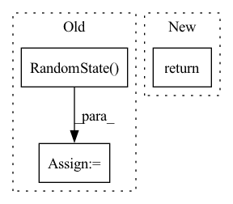

Pattern ID :28169
Before Change
def text_dataset(ctx: Context) -> NumpyIterator:
if ctx.training.debug:
rstate = np.random.RandomState( 0)
while True:
source = rstate.uniform(0, 1, (ctx.training.device_steps, ctx.dims.batch, ctx.dims.sequence))
source = source.reshape((ctx.training.device_steps, ctx.dims.batch, ctx.dims.sequence))
target = np.cumsum(source, -1)
target = np.sin(target)After Change
def text_dataset(ctx: Context) -> typing.Iterator[np.ndarray]:
if ctx.training.debug:
return debug_generator(ctx)
filenames = tf.io.gfile.glob(ctx.data.path)
In pattern: SUPERPATTERN
Frequency: 5
Non-data size: 3
Instances Fragment ID: 83237238
Project Name: homebrewnlp/olmax
Commit Name: d315fd3e3144411fd300baf107fda69f915d0439
Time: 2022-08-11
Author: 39779310+ClashLuke@users.noreply.github.com
File Name: src/data.py
M Class Name: AnonimousClass
N Class Name: AnonimousClass
M Method Name: text_dataset(1)
N Method Name: text_dataset(1)
M Parent Class:
N Parent Class:
M File Name: src/data.py
N File Name: src/data.py
M Start Line: 47
M End Line: 58
N Start Line: 61
N End Line: 61
Before Change
A = torch.cat(A_list, 0)
B = torch.from_numpy(np.random.RandomState( index) .randn(64))
return {"A": A, "A_paths": A_path, "B": B}
After Change
A = torch.cat(A_list, 0)
return {"A": A, "A_paths": A_path}
def __len__(self):
Return the total number of images in the dataset. Fragment ID: 83237250
Project Name: arthur-qiu/stylefacev
Commit Name: 2ffff9d5e5e9e38d6b4784b4d1a3bba57a0afac1
Time: 2022-08-18
Author: Arthur
File Name: data/randomvideo_dataset.py
M Class Name: RandomVideoDataset
N Class Name: RandomVideoDataset
M Method Name: __getitem__(2)
N Method Name: __getitem__(2)
M Parent Class: BaseDataset
N Parent Class: BaseDataset
M File Name: data/randomvideo_dataset.py
N File Name: data/randomvideo_dataset.py
M Start Line: 44
M End Line: 66
N Start Line: 44
N End Line: 64
Before Change
seed = 5
env = PickAndPlaceEnv(gui=args.gui)
env.random_state = np.random.RandomState( seed)
env.reset(pile_file=env.PILES_DIR / "00001000.npz")
for i, result in enumerate(
rollout_plan_reorient(After Change
i += 1
if i > 9999:
return
if __name__ == "__main__":
main() Fragment ID: 83237245
Project Name: wkentaro/reorientbot
Commit Name: e36262e03748a0ebc7cab94e8db6b438650fbd6b
Time: 2021-05-28
Author: www.kentaro.wada@gmail.com
File Name: examples/reorient/create_dataset.py
M Class Name: AnonimousClass
N Class Name: AnonimousClass
M Method Name: main(0)
N Method Name: main(0)
M Parent Class:
N Parent Class:
M File Name: examples/reorient/create_dataset.py
N File Name: examples/reorient/create_dataset.py
M Start Line: 26
M End Line: 86
N Start Line: 29
N End Line: 84